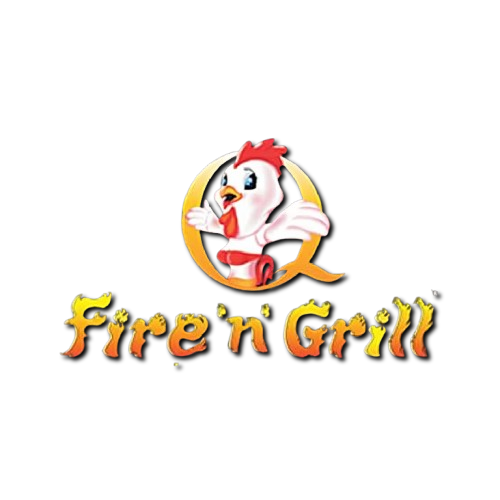
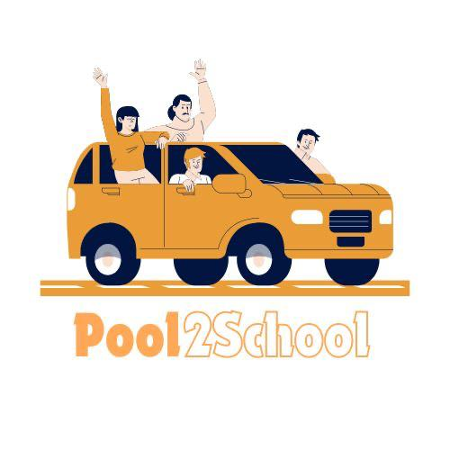
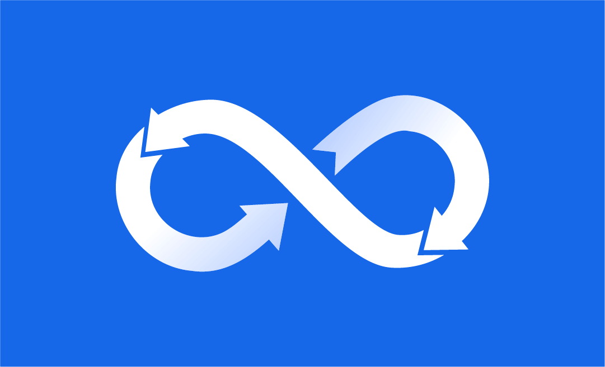
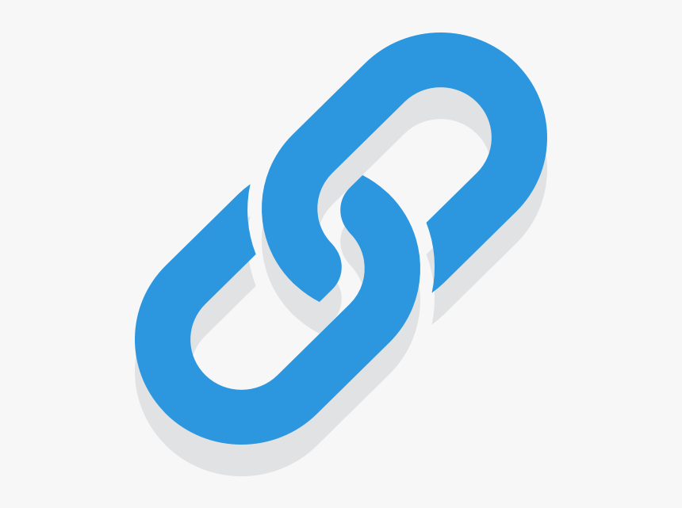
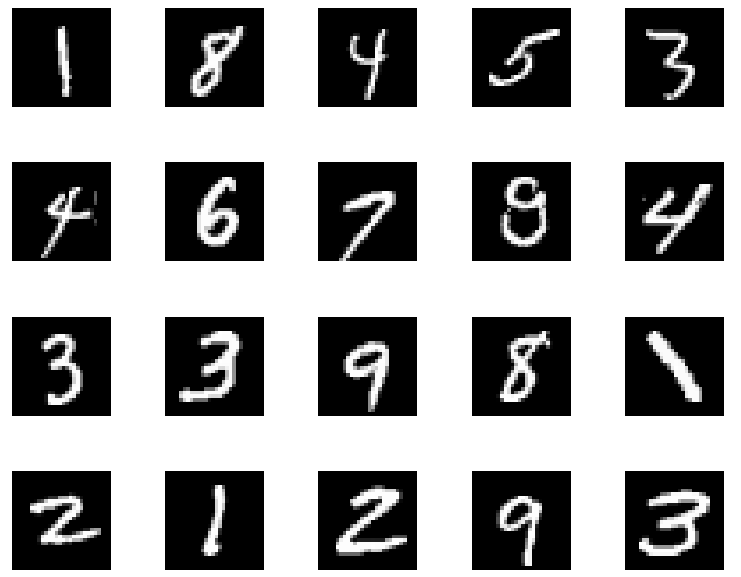

Developed a full-stack restaurant app with user/admin roles, order tracking, notifications, and Google Maps integration using Firebase, Cloud Functions, Cloud Storage, and GCP services.
Technologies: Java, Firebase Auth, Realtime DB, Cloud Storage, Cloud Messaging, Google Maps API, GCP

App for parents to coordinate shared pickup/drop for kids studying in the same school using Firebase, Google Cloud, and location-based filtering.
Technologies: Java, Firebase Realtime DB, Firebase Auth, Google Cloud Platform
App with environmental calculator, carbon emission tracker, and city-based environmental news. Built with WebViews, Firebase, and GCP.
Technologies: Android Studio, Java, WebView, Firebase, Google Cloud Platform

Developed a machine learning model to detect fraudulent credit card transactions using a highly imbalanced dataset. Applied techniques like data preprocessing, under-sampling, and evaluation with precision-recall metrics.
Technologies: Python, Pandas, Scikit-learn, Matplotlib

Developed and deployed a full-fledged microservices Task Manager application with Python Flask APIs, containerized using Docker, orchestrated on Google Kubernetes Engine (GKE), and automated infrastructure provisioning with Terraform. Integrated CI/CD pipelines via Google Cloud Build and implemented monitoring and alerting using Google Cloud Monitoring.
Technologies: Python, Docker, Kubernetes (GKE), Terraform, Google Cloud Build, Cloud Monitoring, CI/CD, GCP
Developed a scalable email marketing system with microservices architecture using Python FastAPI. Features include campaign scheduling, user management, email tracking, and integration with Mailgun/SendGrid APIs. CI/CD implemented with Google Cloud Build; containerized deployment with Docker.
Technologies: Python, FastAPI, Docker, Google Cloud Build, Firestore, Kubernetes (planned)

A scalable, cloud-native URL shortener REST API developed using FastAPI and deployed on Google Cloud Platform. Features include containerization with Docker, CI/CD automation with Cloud Build, artifact management via Artifact Registry, and Kubernetes deployment through GKE with a public LoadBalancer.
Technologies: Python, FastAPI, Docker, Cloud Build, Kubernetes (GKE), Artifact Registry, YAML, Google Cloud Platform

Developed and trained a Convolutional Neural Network (CNN) on the MNIST dataset using Keras to accurately classify handwritten digits. Implemented model evaluation and visualization techniques to validate performance.
Technologies:Python, TensorFlow, Keras, NumPy, Matplotlib

Python-based CLI/GUI app to download YouTube videos via URL. Supports multiple formats and qualities.
Technologies: Python, Pytube, Tkinter
Built an ML model to predict loan recovery probability based on customer/transaction data with feature selection and evaluation.
Technologies: Python, Pandas, Scikit-learn, XGBoost